Unter einer Textfrage versteht man eine Frage mit einem Texteingabefeld, in die der Spieler einen beliebigen Antworttext eingeben kann.
Das sieht in der einfachsten Version so aus:
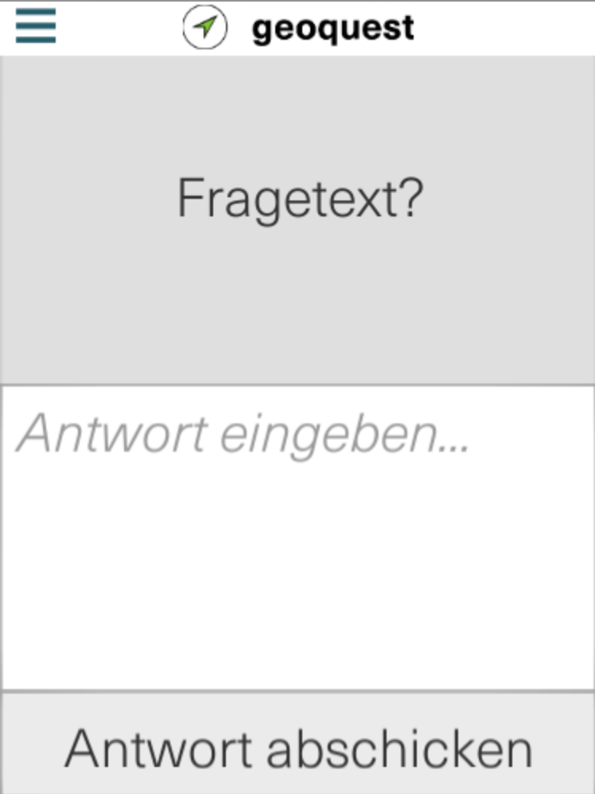
Zunächst blicken wir auf die Einstellungsmöglichkeiten dieses Seitentyps:
| 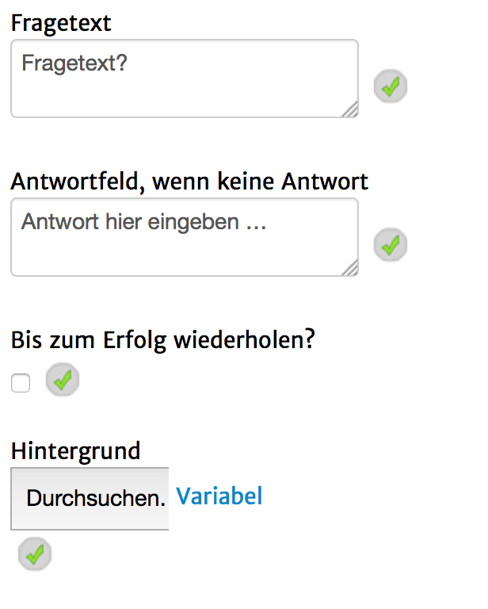 | Fragetext: Der Text, welcher im oberen Bereich der Seite angezeigt wird. Antwortfeld, wenn keine Antwort: Der Text, welcher im Textfeld zu sehen ist, bevor etwas eingegeben wurde. Hintergrund: wird aktuell ignoriert. |
Um zu definieren, welche Eingaben als richtig und welche als falsch deklariert werden, befolge die folgenden Schritte:
1. Unter Inhalt, stelle so viele richtige Antworten, wie du willst ein. Diese können entweder direkt als Text oder als reguläre Ausdrücke eingegeben werden. (Mehr dazu später.)
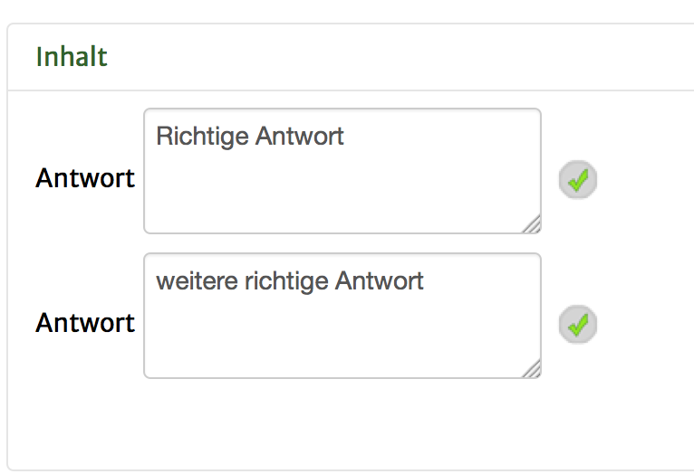
2. Auf "Ereignisse" klicken
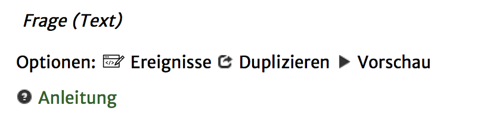
3A. Falls nur zwischen Richtig oder Falsch entschieden werden soll, bei erfolgreiche Interaktion (richtiger Text eingegeben) und erfolgloser Interaktion (nicht der richtige Text eingegeben) mit einem Klick auf "+" die gewünschten Aktionen hinzufügen.
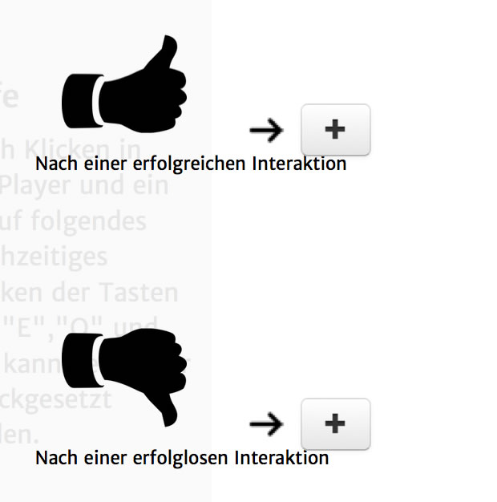
Falls es gewünschte Aktionen für beide Fälle gibt (z.B. ein Seitenwechsel) können diese unter "Ende der Mission" hinzugefügt werden.
3B. Falls zwischen den verschiedenen Einzel-Antworten genauer unterschieden werden soll, so muss nun unter "Ende der Mission" für jede mögliche Eingabe ein Fall angelegt werden.
Dazu geht man folgendermaßen vor:
4B.1 Unter "Ende der Mission" auf das + Klicken und in der Liste "Wenn-Dann-Bedingung" auswählen und hinzufügen.
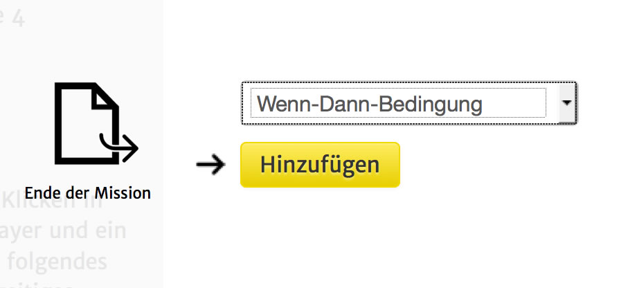
4B.2 Wieder zu "Ende der Mission herunterscrollen" und auf die neu angelegte "Wenn-Dann-Bedingung" klicken.
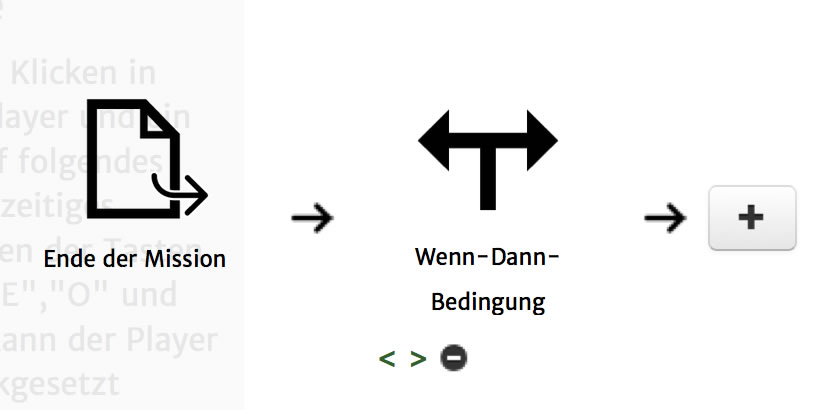
4B.3 In dem nun geöffneten Fenster gibt es nun zwei Interaktionsmöglichkeiten: Eine Bedinung und eine Aktion die darauf folgt definieren.
Für die Bedinung gibt es vorgefertigte Einstellungen, die mit einem Klick auf "+Inhalte" oder "+Erweitert" aufgerufen werden können.
Für den hier vorliegenden Fall, klicken wir nun auf "+Inhalte" und wählen die gewünschte Antwort aus. Hierbei können allerdings keine regulären Ausdrücke verwendet werden, sondern nur direkte Texteingaben.
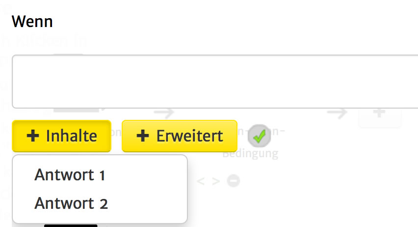
4B.4
Das Fenster müsste nun ungefähr so aussehen:
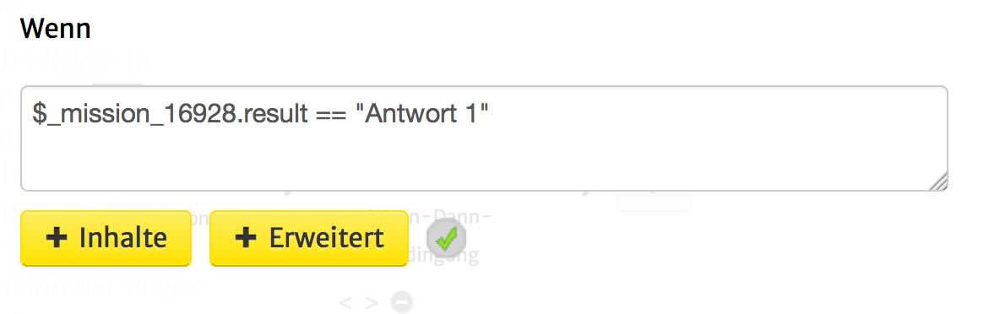
ACHTUNG! Wenn du den Antworttext abänderst, musst du diese Änderung auch in der Wenn-Dann-Bedingung angeben.
4B.5 Nun können weiter unten in dem Fenster die Aktionen, die bei der Auswahl dieser Antwort ausgeführt werden sollen, definiert werden.
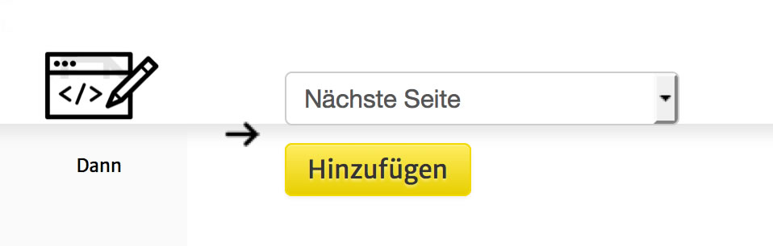
Wenn also zum Beispiel bei der Auswahl einer bestimmten Antwort, eine bestimmte Seite aufgerufen werden soll, kann hier die Aktion "Seite aufrufen" und darin die gesuchte Seite spezifiziert werden.
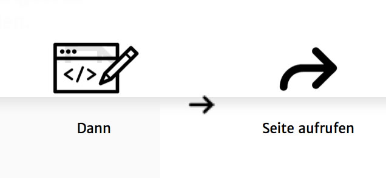